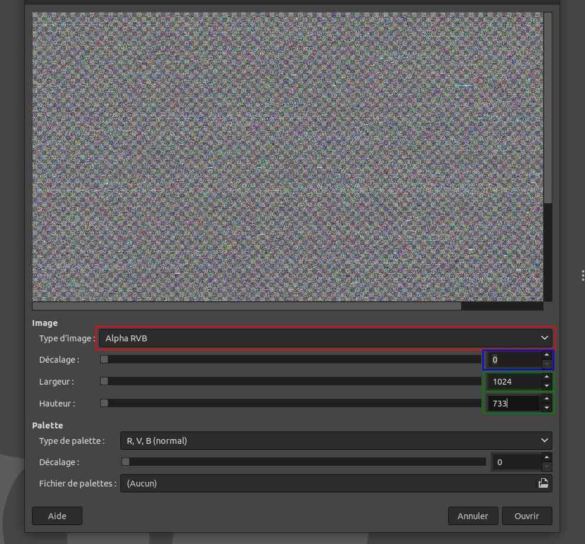
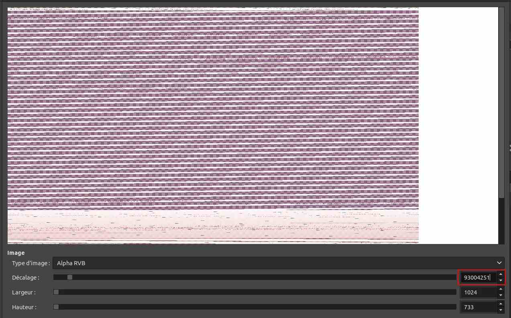
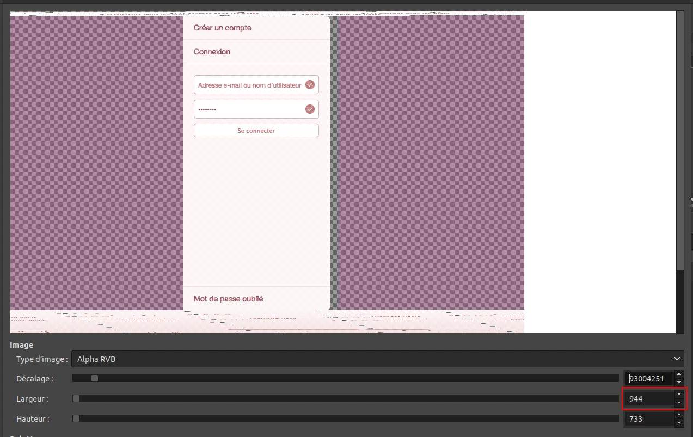

Volatility is a tool supported by the Volatility Foundation that assists forensic investigators when analyzing a computer memory dump. This article focuses on Volatility 2 — a similar workflow is possible with Volatility 3.
This post-it covers how to explore visuals inside a process memory dump. This cannot be done directly on a raw memory dump — you first need to extract the process memory, then use Gimp to visualize it. This works well on Windows and macOS memory dumps; Linux support requires extra steps.
Dump process memory
Create a directory for the output, then dump the memory of the target process (PID 1234):
$ mkdir /tmp/memdump/ # Windows profile $ volatility -f dump.raw --profile=MyWinProfile memdump --pid 1234 --dump-dir /tmp/memdump/ # macOS profile $ volatility -f dump.raw --profile=MyMacProfile mac_memdump --pid 1234 --dump-dir /tmp/memdump/Visualize with GIMP
Rename the dumped file with a .data extension — GIMP will automatically recognize it as raw input — then open it:
$ mv /tmp/memdump/1234.dmp /tmp/memdump/1234.data $ gimp /tmp/memdump/1234.dataIn the import dialog, set Image type to RGB Alpha, width to 1024 and height to 733 (a classic low-resolution screen).

Adjust the displacement offset to scroll through the memory and find something interesting. For instance, a large striped white region can be found at offset 93004251.

Tune the width to reconstruct the original image dimensions — here at 944.

We've found an image extracted from the process memory. Many more can be found by scrolling through the dump. Here is a personal bash function that abstracts all these steps: